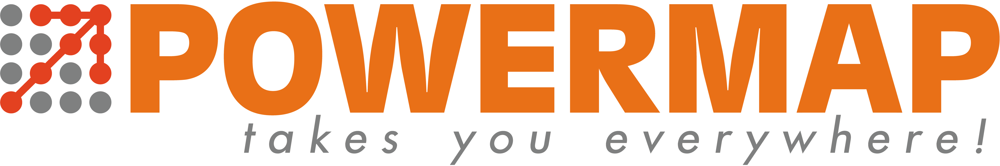

<ons-page ng-controller="aboutCtrl" style = "background-color: #3c84bc">
    
    <ons-toolbar fixed-style ng-controller="SlidingMenuController" style="background-color: #3c84bc">
        <div class="left">
            <ons-toolbar-button ng-click="slidingMenu.toggleMenu()"><ons-icon icon="bars"></ons-icon></ons-toolbar-button>
        </div>
        <div class="center">
          <div style="width: 60%;margin: auto;">
            
          </div>
        </div>
    </ons-toolbar>

    <div class="login-form" style = "background-color: #68a0cb;
    width: 100%; height: 100%">
    <br>
    <p style="color: white; padding-bottom: 50px;"><h3>เกี่ยวกับ</h3><br>ออกแบบและพัฒนาโดย<br>บริษัท อาปิโก ไอทีเอส จำกัด<br>www.powermap.in.th<br>02-150-0538<br>serviceaits@aapico.com</p>
    <br><br><br>
    <div style="width: 80%; margin: auto">
    
    </div>
    </div>
</ons-page>